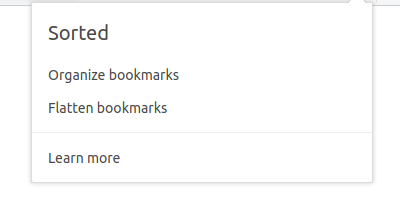
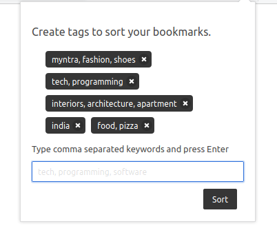
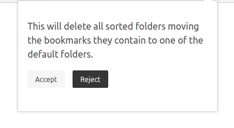

A web extension to organize bookmarks.
because bookmark management should be simple

Any bookmark with a title containing one of the keywords gets moved into the keyword's folder. The creation/deletion of keyword folders is automatic. To group multiple keywords into the same folder, specify them as a single entry separated by commas.

(you wouldn't want to, promise)
